Slide 1So you wanna Find a Job?
Tips, Tricks, and TalesSlide 2Choosing a Path
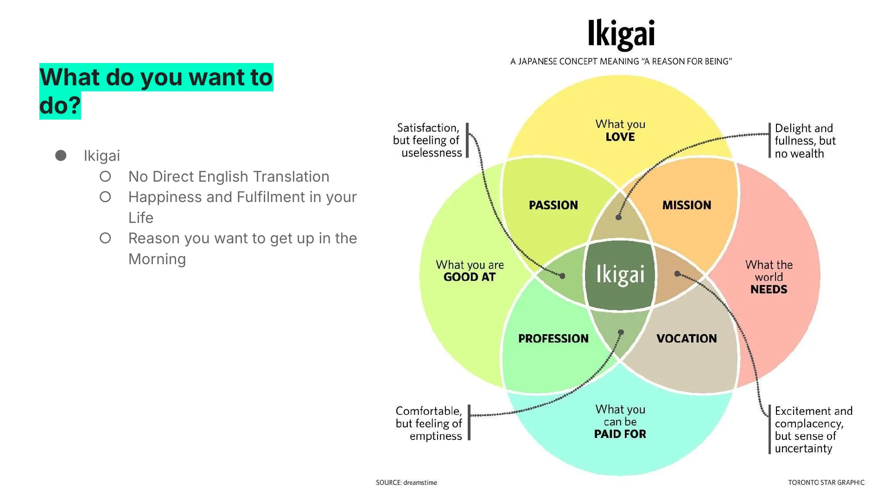
Slide 3What do you want to do?
Ikigai
No Direct English Translation
Happiness and Fulfilment in your Life
Reason you want to get up in the Morning
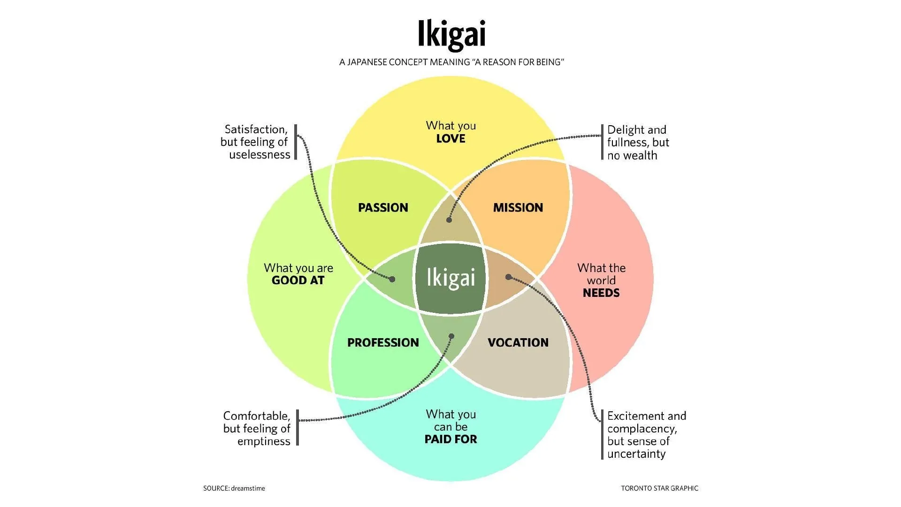
Slide 4(no text on this slide)
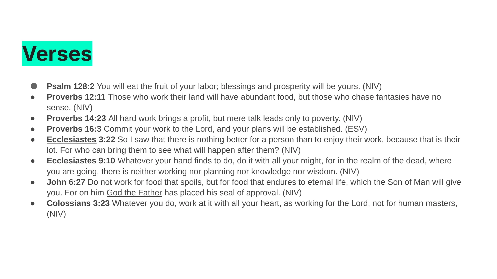
Slide 5Verses
Psalm 128:2 You will eat the fruit of your labor; blessings and prosperity will be yours. (NIV)
Proverbs 12:11 Those who work their land will have abundant food, but those who chase fantasies have no sense. (NIV)
Proverbs 14:23 All hard work brings a profit, but mere talk leads only to poverty. (NIV)
Proverbs 16:3 Commit your work to the Lord, and your plans will be established. (ESV)
Ecclesiastes 3:22 So I saw that there is nothing better for a person than to enjoy their work, because that is their lot. For who can bring them to see what will happen after them? (NIV)
Ecclesiastes 9:10 Whatever your hand finds to do, do it with all your might, for in the realm of the dead, where you are going, there is neither working nor planning nor knowledge nor wisdom. (NIV)
John 6:27 Do not work for food that spoils, but for food that endures to eternal life, which the Son of Man will give you. For on him God the Father has placed his seal of approval. (NIV)
Colossians 3:23 Whatever you do, work at it with all your heart, as working for the Lord, not for human masters, (NIV)
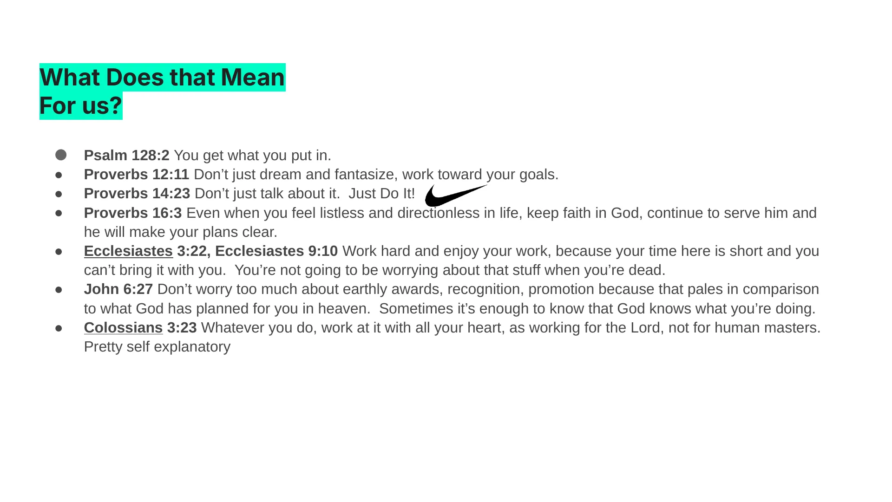
Slide 6What Does that Mean For us?
Psalm 128:2 You get what you put in.
Proverbs 12:11 Don’t just dream and fantasize, work toward your goals.
Proverbs 14:23 Don’t just talk about it. Just Do It!
Proverbs 16:3 Even when you feel listless and directionless in life, keep faith in God, continue to serve him and he will make your plans clear.
Ecclesiastes 3:22, Ecclesiastes 9:10 Work hard and enjoy your work, because your time here is short and you can’t bring it with you. You’re not going to be worrying about that stuff when you’re dead.
John 6:27 Don’t worry too much about earthly awards, recognition, promotion because that pales in comparison to what God has planned for you in heaven. Sometimes it’s enough to know that God knows what you’re doing.
Colossians 3:23 Whatever you do, work at it with all your heart, as working for the Lord, not for human masters. Pretty self explanatorySlide 7The Hunt
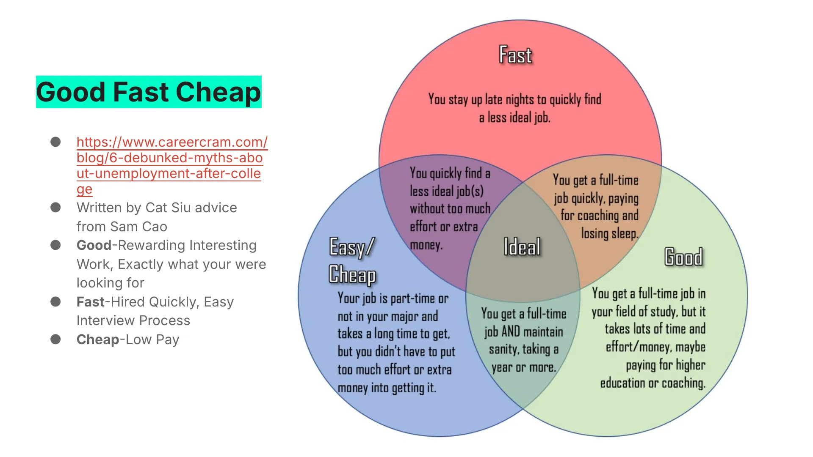
Slide 8Good Fast Cheap
https://www.careercram.com/blog/6-debunked-myths-about-unemployment-after-college
Written by Cat Siu advice from Sam Cao
Good-Rewarding Interesting Work, Exactly what your were looking for
Fast-Hired Quickly, Easy Interview Process
Cheap-Low Pay
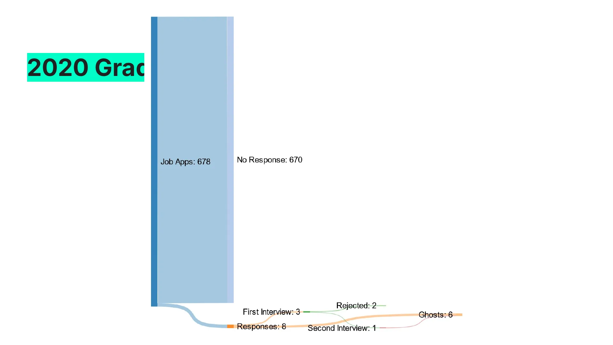
Slide 92020 Graduate
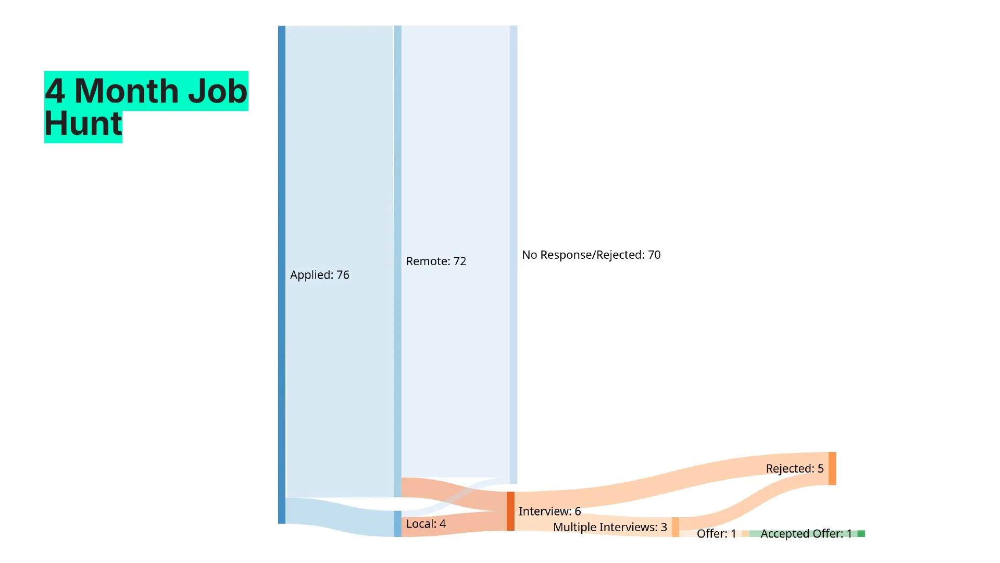
Slide 104 Month Job Hunt
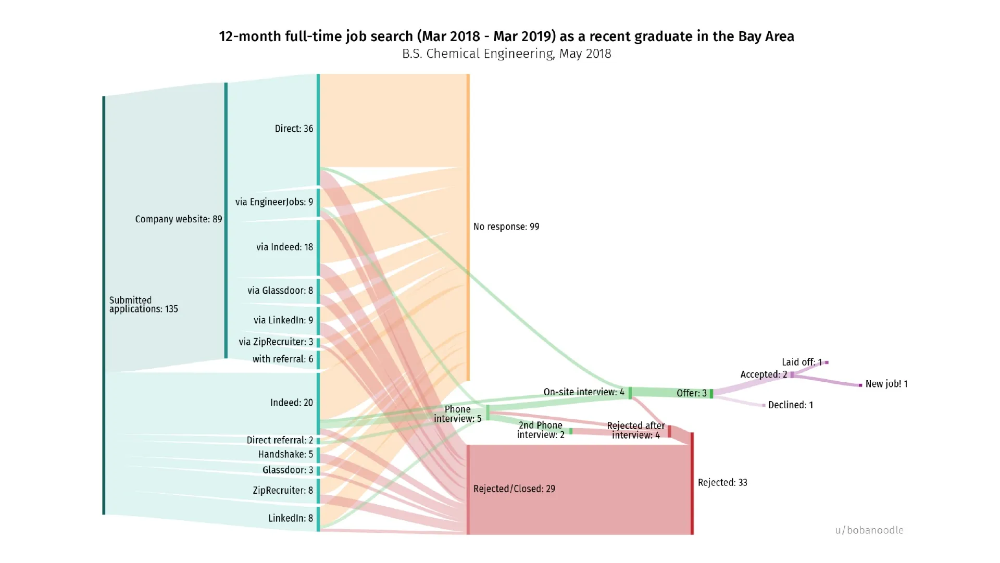
Slide 11(no text on this slide)
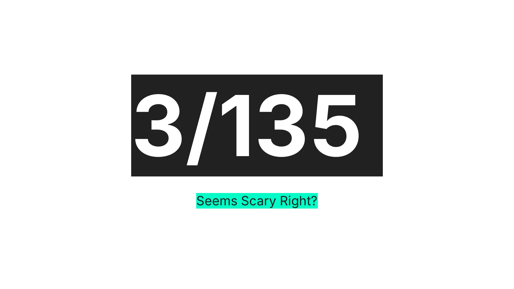
Slide 123/135
Seems Scary Right?
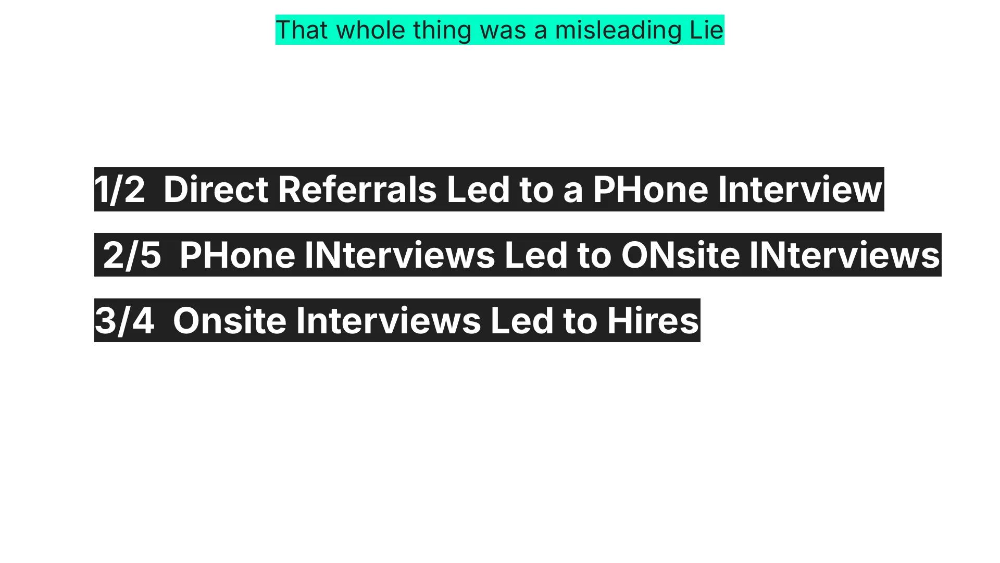
Slide 131/2 Direct Referrals Led to a PHone Interview
2/5 PHone INterviews Led to ONsite INterviews
3/4 Onsite Interviews Led to Hires
That whole thing was a misleading LieSlide 14Showing YOu know What you Say You KNow
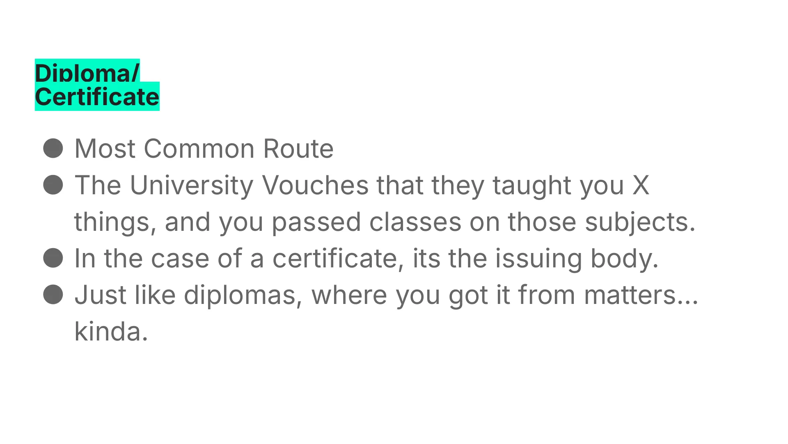
Slide 15Diploma/Certificate
Most Common Route
The University Vouches that they taught you X things, and you passed classes on those subjects.
In the case of a certificate, its the issuing body.
Just like diplomas, where you got it from matters… kinda.
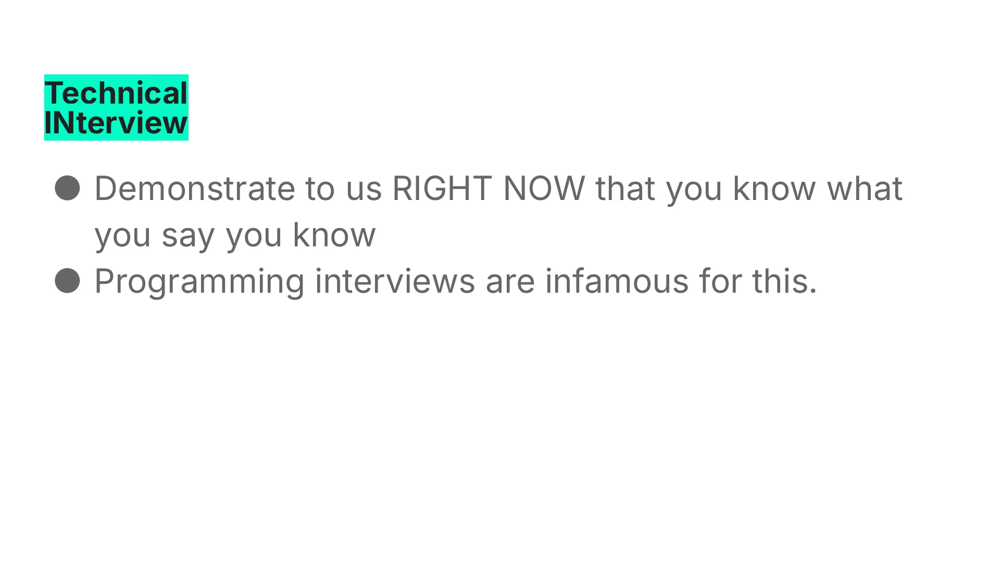
Slide 16Technical INterview
Demonstrate to us RIGHT NOW that you know what you say you know
Programming interviews are infamous for this.
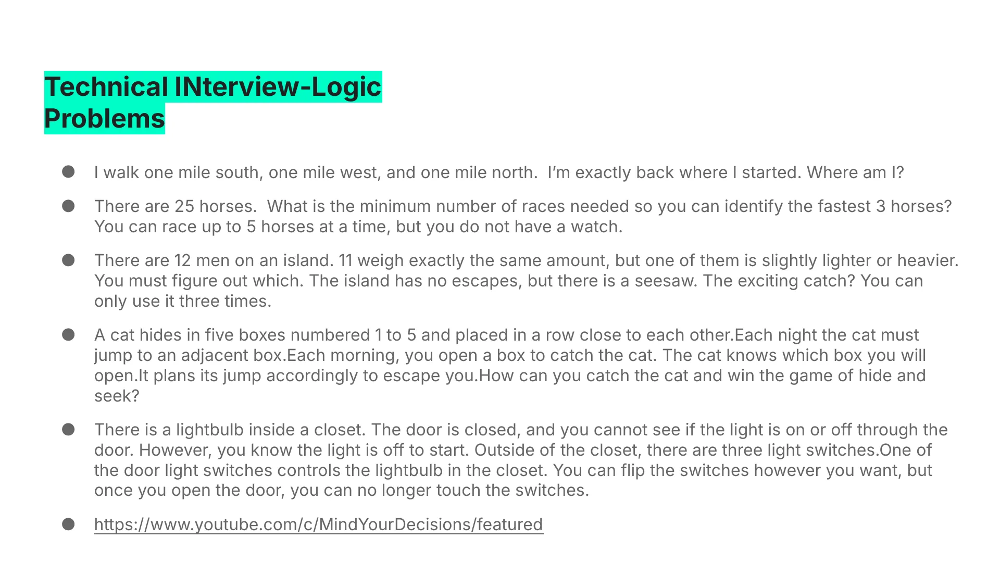
Slide 17Technical INterview-Logic Problems
I walk one mile south, one mile west, and one mile north. I’m exactly back where I started. Where am I?
There are 25 horses. What is the minimum number of races needed so you can identify the fastest 3 horses? You can race up to 5 horses at a time, but you do not have a watch.
There are 12 men on an island. 11 weigh exactly the same amount, but one of them is slightly lighter or heavier. You must figure out which. The island has no escapes, but there is a seesaw. The exciting catch? You can only use it three times.
A cat hides in five boxes numbered 1 to 5 and placed in a row close to each other.Each night the cat must jump to an adjacent box.Each morning, you open a box to catch the cat. The cat knows which box you will open.It plans its jump accordingly to escape you.How can you catch the cat and win the game of hide and seek?
There is a lightbulb inside a closet. The door is closed, and you cannot see if the light is on or off through the door. However, you know the light is off to start. Outside of the closet, there are three light switches.One of the door light switches controls the lightbulb in the closet. You can flip the switches however you want, but once you open the door, you can no longer touch the switches.
https://www.youtube.com/c/MindYourDecisions/featured
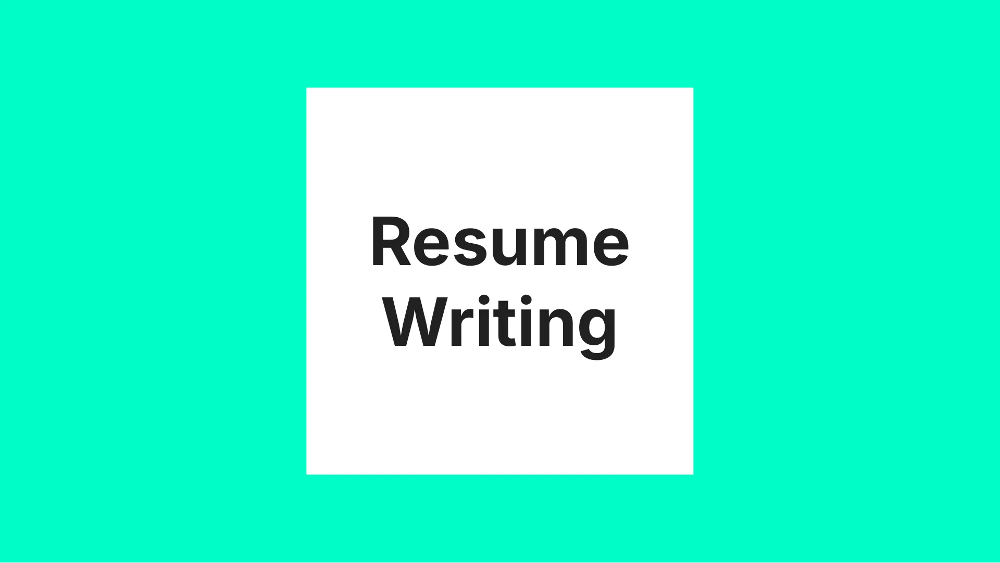
Slide 18Resume Writing
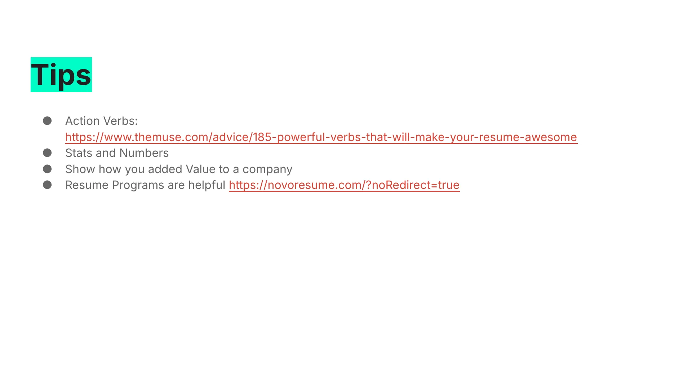
Slide 19Tips
Action Verbs: https://www.themuse.com/advice/185-powerful-verbs-that-will-make-your-resume-awesome
Stats and Numbers
Show how you added Value to a company
Resume Programs are helpful https://novoresume.com/?noRedirect=trueSlide 20Linked In
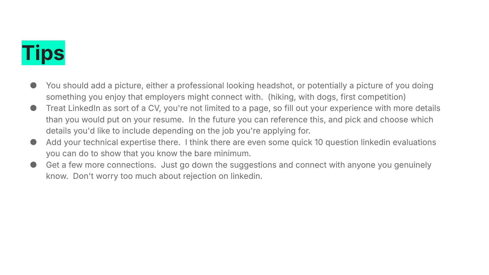
Slide 21Tips
You should add a picture, either a professional looking headshot, or potentially a picture of you doing something you enjoy that employers might connect with. (hiking, with dogs, first competition)
Treat LinkedIn as sort of a CV, you're not limited to a page, so fill out your experience with more details than you would put on your resume. In the future you can reference this, and pick and choose which details you'd like to include depending on the job you're applying for.
Add your technical expertise there. I think there are even some quick 10 question linkedin evaluations you can do to show that you know the bare minimum.
Get a few more connections. Just go down the suggestions and connect with anyone you genuinely know. Don't worry too much about rejection on linkedin.Slide 22THe Interview
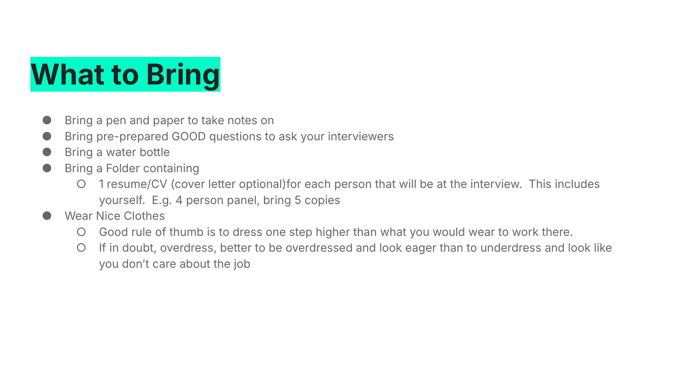
Slide 23What to Bring
Bring a pen and paper to take notes on
Bring pre-prepared GOOD questions to ask your interviewers
Bring a water bottle
Bring a Folder containing
1 resume/CV (cover letter optional)for each person that will be at the interview. This includes yourself. E.g. 4 person panel, bring 5 copies
Wear Nice Clothes
Good rule of thumb is to dress one step higher than what you would wear to work there.
If in doubt, overdress, better to be overdressed and look eager than to underdress and look like you don’t care about the job
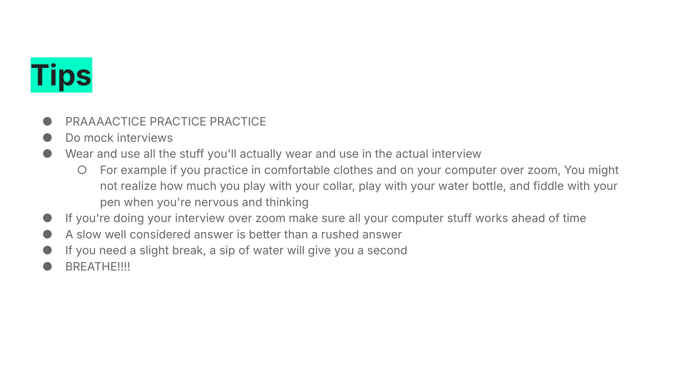
Slide 24Tips
PRAAAACTICE PRACTICE PRACTICE
Do mock interviews
Wear and use all the stuff you'll actually wear and use in the actual interview
For example if you practice in comfortable clothes and on your computer over zoom, You might not realize how much you play with your collar, play with your water bottle, and fiddle with your pen when you're nervous and thinking
If you're doing your interview over zoom make sure all your computer stuff works ahead of time
A slow well considered answer is better than a rushed answer
If you need a slight break, a sip of water will give you a second
BREATHE!!!!Slide 25Salary Negotiation
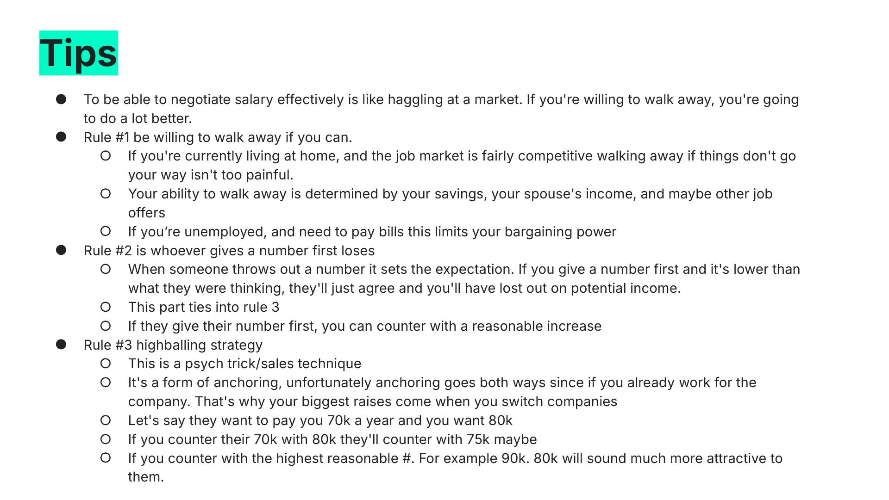
Slide 26Tips
To be able to negotiate salary effectively is like haggling at a market. If you're willing to walk away, you're going to do a lot better.
Rule #1 be willing to walk away if you can.
If you're currently living at home, and the job market is fairly competitive walking away if things don't go your way isn't too painful.
Your ability to walk away is determined by your savings, your spouse's income, and maybe other job offers
If you’re unemployed, and need to pay bills this limits your bargaining power
Rule #2 is whoever gives a number first loses
When someone throws out a number it sets the expectation. If you give a number first and it's lower than what they were thinking, they'll just agree and you'll have lost out on potential income.
This part ties into rule 3
If they give their number first, you can counter with a reasonable increase
Rule #3 highballing strategy
This is a psych trick/sales technique
It's a form of anchoring, unfortunately anchoring goes both ways since if you already work for the company. That's why your biggest raises come when you switch companies
Let's say they want to pay you 70k a year and you want 80k
If you counter their 70k with 80k they'll counter with 75k maybe
If you counter with the highest reasonable #. For example 90k. 80k will sound much more attractive to them.
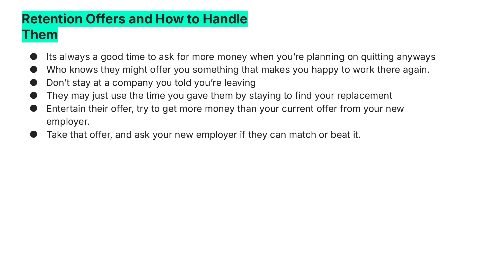
Slide 27Retention Offers and How to Handle Them
Its always a good time to ask for more money when you’re planning on quitting anyways
Who knows they might offer you something that makes you happy to work there again.
Don’t stay at a company you told you’re leaving
They may just use the time you gave them by staying to find your replacement
Entertain their offer, try to get more money than your current offer from your new employer.
Take that offer, and ask your new employer if they can match or beat it.
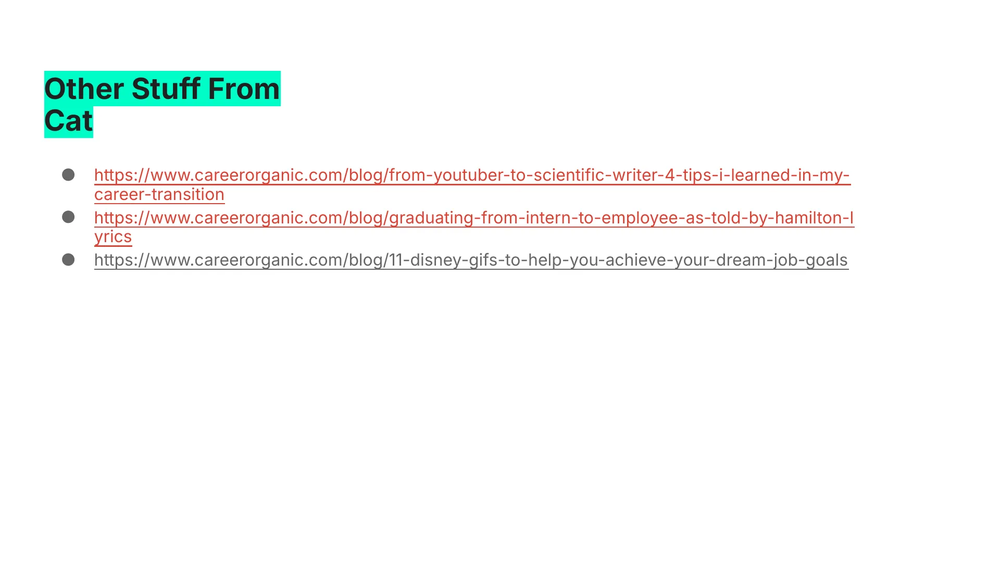
Slide 28Other Stuff From Cat
https://www.careerorganic.com/blog/from-youtuber-to-scientific-writer-4-tips-i-learned-in-my-career-transition
https://www.careerorganic.com/blog/graduating-from-intern-to-employee-as-told-by-hamilton-lyrics
https://www.careerorganic.com/blog/11-disney-gifs-to-help-you-achieve-your-dream-job-goals